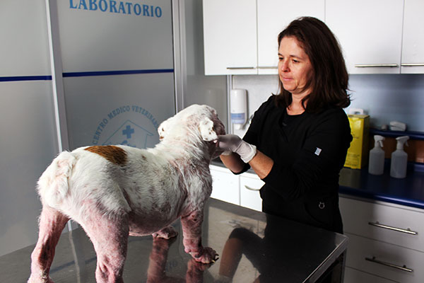
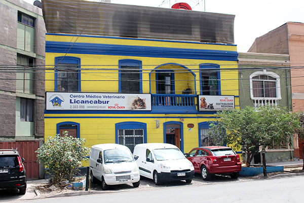
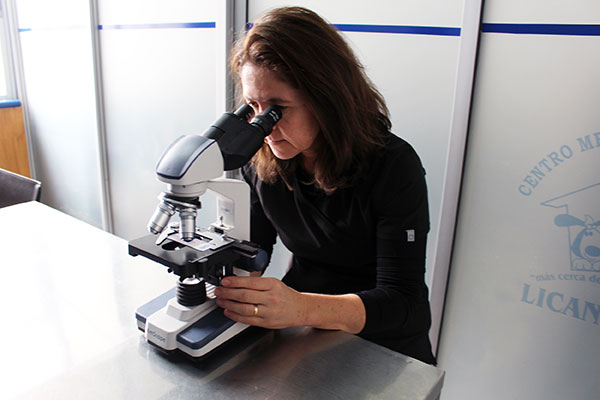
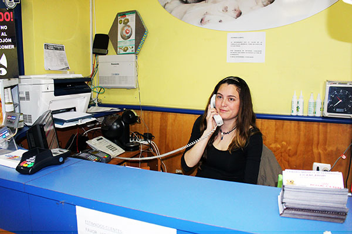

Más de 15 años cuidando a las mascotas de Antofagasta, con el equipamiento médico necesario para su salud.
Solicitar una hora



Todos sus profesionales están altamente calificados para ofrecer una atención personalizada, integral y de calidad. Asesoran en el cuidado y bienestar de las mascotas, con equipos de última tecnología para el tratamiento de enfermedades.
Lunes a viernes: 8:30 a 21:00 hrs.
Sábado: 10:00 a 20:30 hrs.
Salvador Reyes 1007
Antofagasta